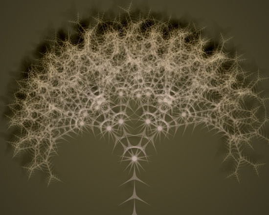

Posted by Mark Meyer on Jan 09, 2008
Tom, this looks fantastic. Nice work.
Posted by Tom De Smedt on Jan 12, 2008
Thanks Mark!
I'm currently adding some improvements. Right now the library is good for growing trees but a bit unwieldy for modeling geometric shapes (like Penrose etc.)
So expect an update soon.
Posted by Mark M on Jan 23, 2008
Tom,
In my original attempts with the L-system I had trouble with a lot of the geometric shapes--especially the Penrose tiles. I realized that the way I worked out the algorithm made rules that drew but didn't recurse difficult if not impossible. Attached is a slightly different script that creates the Penrose P3 pattern. This just uses the rules from wikipedia (which didn't work before).
size(500, 400) translate(250, 200) #center starting point transform(mode=CORNER) colormode(HSB) strokewidth(.35) strokeColor = color(.6, .3, .7, .3) stroke(strokeColor) def draw(): line(0, 0, segmentLength, 0) def iterate(n, rule): global strokeColor if rule == '-': rotate(rightTurnAngle) elif rule == '+': rotate(leftTurnAngle) elif rule == "[": push() elif rule == "]": pop() else: if n >= 0: for step in rules[rule]: iterate(n-1, step) elif rule=='1': draw() translate(segmentLength, 0) segmentLength = 20.0 rightTurnAngle = -36.0 leftTurnAngle = 36.0 rules= {} rules['6'] ='81++91----71[-81----61]++' rules['7'] = '+81--91[---61--71]+' rules['8'] = '-61++71[+++81++91]-' rules['9'] = '--81++++61[+91++++71]--71' rules['1'] = '' rules['start'] = '[7]++[7]++[7]++[7]++[7]' iterate(5, 'start')I'm still playing with this new module--haven't figured out how to do this with it yet.
Posted by Tom De Smedt on Jan 26, 2008
Ah yes, this one has a subtly different nesting scheme. The L-system in the library has this scheme:
for step in rules[rule]: if step == "F": # draw segment elif step in rules: # recursion elif step == "-": rotate(-angle) # etc. all the transformationsSo I am now trying to update the library to your above script. There's some tricky stuff with the time parameter but I should be able to get it to work pretty soon.

L-system
Posted by Tom De Smedt on Jan 09, 2008
The documentation for a new Graph library is coming along nicely, and you can also expect some good improvements to the Core Image library in the coming days. Meanwhile, I've put an L-system library online.
You can use it to model plants, trees, fractals, etc.
We'd like to thank Mark Meyer for his L-system code in the gallery.
Enjoy!